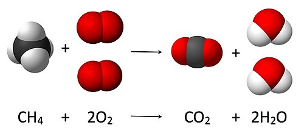
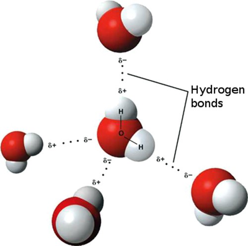
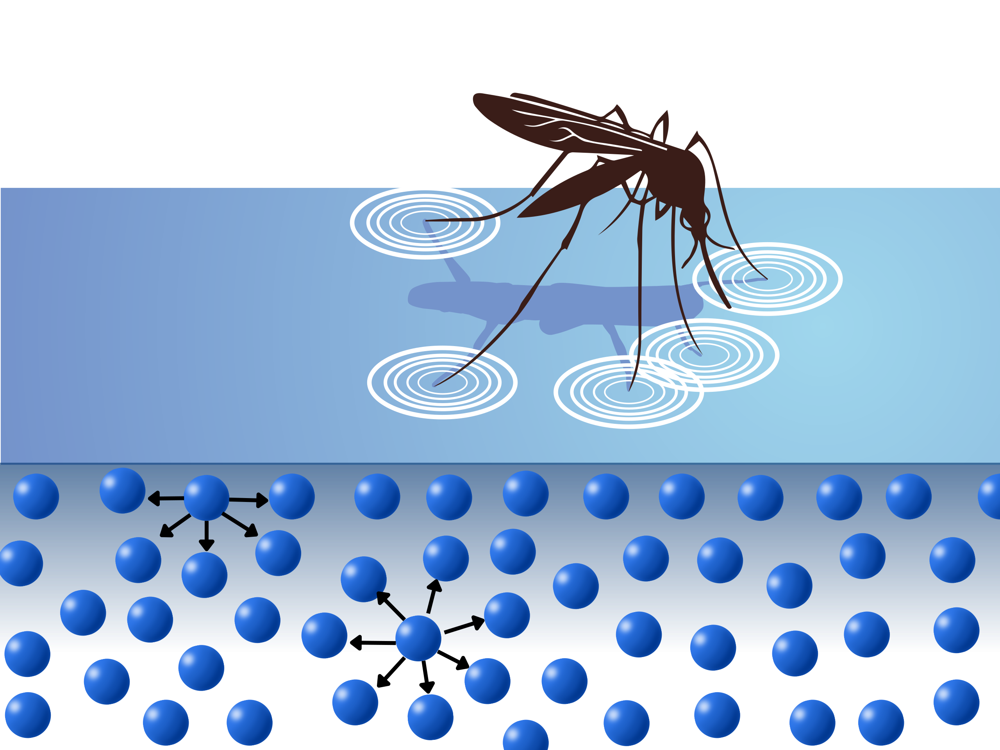

Química práctica y aplicada
Lección 1: Átomos, iones y compuestos
Estructura atómica
¿Qué es un átomo?
Un átomo es la unidad básica de la materia. Está compuesto por un núcleo central y una región externa donde se encuentran los electrones.
Partes principales del átomo
- Protón – partícula con carga positiva.
- Neutrón – partícula sin carga eléctrica.
- Electrón – partícula con carga negativa que se mueve alrededor del núcleo.
Número atómico y masa atómica
Número atómico (Z)
Es la cantidad de protones en el núcleo. Determina la identidad de cada elemento químico.
Número másico (A)
Es la suma de protones más neutrones presentes en el núcleo del átomo.
Isótopos
¿Qué es un isótopo?
Son átomos del mismo elemento (igual número atómico) pero con diferente número de neutrones. Esto hace que tengan distinta masa atómica.
Propiedades de los isótopos
- Misma cantidad de protones.
- Diferente cantidad de neutrones.
- Propiedades químicas similares.
- Algunos pueden ser radiactivos.

Modelos atómicos
Modelo de Bohr
Propone que los electrones orbitan el núcleo en niveles de energía definidos. Cada nivel tiene un valor energético específico.
Modelo mecánico-cuántico
Describe a los electrones como nubes de probabilidad llamadas “orbitales”. No define trayectorias exactas, sino zonas donde es más probable encontrarlos.
Configuración electrónica
Concepto
Es la forma en que los electrones se distribuyen en los distintos niveles y subniveles de energía del átomo.
Reglas principales
- Principio de Aufbau – los electrones ocupan primero los niveles más bajos.
- Principio de exclusión de Pauli – un orbital puede tener como máximo dos electrones.
- Regla de Hund – los electrones se distribuyen en orbitales vacíos antes de emparejarse.

Propiedades periódicas
Radio atómico
Tamaño promedio de un átomo. Aumenta hacia abajo en un grupo y disminuye hacia la derecha en un periodo.
Energía de ionización
Energía necesaria para remover un electrón de un átomo. Aumenta hacia la derecha y hacia arriba en la tabla periódica.
Afinidad electrónica
Energía liberada cuando un átomo gana un electrón. Tiende a aumentar hacia la derecha del periodo.
Electronegatividad
Medida de la capacidad de un átomo para atraer electrones en un enlace químico. Aumenta hacia arriba y a la derecha en la tabla periódica.
Lección 2: Reacciones químicas y estequiometría

Reacciones químicas
¿Qué es una reacción química?
Una reacción química es un proceso en el que unas sustancias llamadas reactivos se transforman en otras nuevas llamadas productos. En este proceso se reorganizan los átomos y se forman o rompen enlaces.
Representación mediante ecuaciones
Las ecuaciones químicas se usan para describir estos cambios. Incluyen reactivos, productos y coeficientes que muestran las proporciones en las que participan las sustancias.
Balanceo de ecuaciones químicas
Conservación de la masa
El número de átomos de cada elemento debe ser igual antes y después de la reacción. Por eso las ecuaciones deben ser balanceadas.
Método para balancear
- Ajustar coeficientes (números grandes, nunca subíndices).
- Balancear primero elementos que aparecen menos veces.
- Dejar hidrógeno y oxígeno para el final.
- Verificar al final todos los elementos.
Estequiometría
Relaciones mol-mol
Los coeficientes de la ecuación balanceada indican la proporción exacta en moles entre reactivos y productos.
Cálculos básicos
- Mol → Mol: usar proporciones de los coeficientes.
- Mol → Gramo: multiplicar por masa molar.
- Gramo → Mol: dividir entre masa molar.
Reactivo limitante
Es el reactivo que se consume primero y determina la cantidad máxima de producto formado.
Rendimiento teórico y real
El rendimiento teórico es la cantidad máxima de producto que se puede obtener. El rendimiento porcentual compara lo obtenido realmente con el valor teórico.
Composición química y relaciones de masa
Masa molar
La masa molar es la masa de un mol de una sustancia. Se obtiene sumando las masas atómicas de todos los átomos de la fórmula.
Porcentaje en masa
El porcentaje en masa de un elemento indica la fracción de la masa total que corresponde a ese elemento.
Análisis de composición
A partir del porcentaje en masa se puede determinar la fórmula empírica de un compuesto y, si se conoce la masa molar, también la fórmula molecular.
Tipos de problemas estequiométricos
Reacciones en disolución
Cuando los reactivos están en soluciones acuosas, se utilizan concentraciones como molaridad (mol/L) para hacer cálculos.
Reacciones con gases
En reacciones que involucran gases se aplican relaciones del gas ideal para convertir entre volumen, moles y condiciones de presión–temperatura.
Lección 3: Estructura electrónica de los átomos
Estructura electrónica de los átomos
Definición
La estructura electrónica describe cómo se distribuyen los electrones alrededor del núcleo del átomo: en niveles, subniveles y orbitales con diferentes energías. Esta distribución condiciona las propiedades químicas del átomo.
Niveles de energía y orbitales
Niveles principales (capas)
Los electrones se organizan en capas o niveles, numerados con un número cuántico principal n (1, 2, 3…). Cuanto mayor es n, más lejos del núcleo y mayor energía tiene el electrón.
Subniveles y tipos de orbitales
Cada nivel contiene subniveles llamados s, p, d, f, que representan orbitales con formas y energías distintas. El orden de energía en un átomo con varios electrones suele ser: s < p < d < f dentro de una misma capa.
Capacidad de electrones por orbital
- Orbital s → máximo 2 electrones
- Orbital p → máximo 6 electrones
- Orbital d → máximo 10 electrones
- Orbital f → máximo 14 electrones
Configuración electrónica
¿Qué es?
Es la forma de representar cuántos electrones tiene un átomo y en qué orbitales están ubicados. Se escribe con la capa, subnivel y número de electrones, por ejemplo: 1s² 2s² 2p⁶…
Principios de llenado
- Principio de Aufbau: los electrones ocupan primero los orbitales de menor energía.
- Principio de exclusión de Pauli: no puede haber dos electrones con los mismos cuatro números cuánticos en un átomo.
- Regla de Hund: en orbitales degenerados (misma energía), primero se coloca un electrón por orbital antes de emparejarlos.
Importancia de la configuración
La configuración electrónica determina los electrones de valencia —los más externos—, que son los responsables de la reactividad química, formación de enlaces y propiedades del elemento.
Orden de ocupación de orbitales
El orden en que los orbitales se llenan no sigue simplemente n-1, n-2... sino que depende de su energía: típicamente: 1s → 2s → 2p → 3s → 3p → 4s → 3d → 4p → …
Este patrón explica la estructura de la tabla periódica y por qué elementos con configuraciones similares están agrupados.
Importancia química y propiedades periódicas
La estructura electrónica determina propiedades esenciales como reactividad, estado de oxidación, afinidad electrónica, electronegatividad y enlace químico.
Además, permite explicar por qué los elementos de un mismo grupo de la tabla periódica tienen comportamientos similares: comparten configuración de valencia.
Lección 4: Enlaces químicos

Enlaces químicos
Definición
Un enlace químico es la fuerza de atracción que mantiene unidos a átomos en moléculas o compuestos. Ocurre cuando los átomos comparten o transfieren electrones de valencia para alcanzar una configuración estable.
¿Por qué se forman?
Cuando los átomos se unen mediante enlaces, la energía total del sistema disminuye. Esa reducción de energía genera una unión estable más favorable que la situación en la que los átomos están separados.
Tipos de enlaces químicos
Enlace covalente
En este tipo de enlace, dos átomos comparten uno o más pares de electrones. Es común entre elementos no metálicos.
Variantes de enlaces covalentes
- Enlace covalente no polar: los electrones se comparten de manera equitativa (átomos iguales o similar electronegatividad).
- Enlace covalente polar: los electrones se comparten de manera desigual — un átomo atrae más la nube electrónica que el otro, generando dipolos.
Enlace iónico
Ocurre cuando un átomo (generalmente metálico) transfiere electrones a otro átomo (generalmente no metálico). El que pierde electrones se convierte en catión, y el que los gana en anión — la atracción electrostática entre cargas opuestas forma el enlace.
Enlace metálico
Se da entre átomos metálicos. Los electrones de valencia se deslocalizan formando un “mar de electrones” que mantiene unidos a los iones metálicos, permitiendo conductividad eléctrica y térmica.
Fuerza, energía y distancia de enlace
Energía de enlace
Es la energía necesaria para romper un mol de enlaces en fase gaseosa. A mayor número de pares compartidos (dobles, triples), mayor energía y más fuerte el enlace.
Longitud de enlace
Es la distancia promedio entre los núcleos de los átomos enlazados. En general, a enlaces más fuertes les corresponde menor longitud.
Implicaciones de los enlaces en propiedades químicas
• Las sustancias iónicas suelen formar estructuras cristalinas, tener puntos de fusión y ebullición altos y conducir electricidad cuando están disueltas o fundidas.
• Las moléculas con enlaces covalentes pueden ser solubles en distintos medios, tener polaridad (si el enlace es polar), y formar moléculas estables e independientes.
• Los metales, gracias al enlace metálico, destacan por su maleabilidad, ductilidad, brillo, conductividad eléctrica y térmica.
Enlaces débiles e interacciones intermoleculares
Puente de hidrógeno
Es una atracción débil entre un átomo de hidrógeno unido covalentemente a un átomo muy electronegativo (como O, N o F), y otro átomo electronegativo de una molécula distinta. Aunque no es un “enlace fuerte”, es fundamental en moléculas biológicas (agua, ADN, proteínas).
Fuerzas de Van der Waals y otras interacciones
Son interacciones muy débiles entre moléculas neutras, debidas a dipolos temporales o inducidos. No forman enlaces, pero influyen en propiedades físicas: estado, solubilidad, punto de ebullición, etc.
Lección 5: Estados de la materia y fuerzas intermoleculares

Materia y sus estados
Definición de materia
La materia es todo aquello que tiene masa y ocupa espacio (volumen). Puede existir en diferentes estados dependiendo de la energía de sus partículas.
Estados clásicos de la materia
- Sólido: partículas muy juntas, ordenadas y con movimiento limitado — forma y volumen definidos.
- Líquido: partículas cercanas pero con libertad de movimiento — volumen definido, forma variable.
- Gas: partículas separadas y en constante movimiento — ni forma ni volumen definidos, se adapta al recipiente.
Factores que determinan el estado
Energía cinética vs fuerza entre partículas
El estado depende de dos factores contrapuestos: • La energía de movimiento (energía cinética) de las partículas. • Las fuerzas de atracción entre las moléculas — si predominan las fuerzas, materia compacta (sólido/liquido); si predomina la energía cinética, materia expansible (gas).
Transiciones de fase
Cambiando temperatura o presión, una sustancia puede pasar de sólido → líquido → gas — o viceversa. El cambio de fase refleja el equilibrio entre energía cinética y fuerzas intermoleculares.
Fuerzas intermoleculares
¿Qué son y por qué importan?
Son las fuerzas de atracción o repulsión que existen entre moléculas. Aunque más débiles que los enlaces internos de las moléculas (intramoleculares), determinan muchas propiedades físicas: punto de fusión, ebullición, solubilidad, viscosidad, tensión superficial, etc.
Tipos principales de fuerzas intermoleculares
- Fuerzas de dispersión (London): presentes en todas las moléculas; temporales dipolos inducidos.
- Dipolo-dipolo: entre moléculas polares con dipolos permanentes.
- Puentes de hidrógeno: caso especial de dipolo-dipolo, cuando H está unido a O, N o F — muy importante en sustancias como el agua.
- Interacciones ión-dipolo / ión-inducido: cuando iones interactúan con moléculas polares o no polares — relevante en soluciones iónicas.
Comparación de fuerzas (fuerza → efecto)
- Fuerzas fuertes (como puentes de hidrógeno) → mayor punto de fusión/ebullición, mayor cohesión, mayor tensión superficial.
- Fuerzas débiles (como fuerzas de dispersión) → menor punto de fusión/ebullición, mayor volatilidad.
Estado de la materia vs. fuerzas intermoleculares
Sólidos
Las fuerzas intermoleculares son muy fuertes, las partículas están muy juntas y vibran en su lugar — estructura fija.
Líquidos
Las fuerzas siguen presentes, pero las partículas tienen movilidad — se deslizan unas sobre otras manteniendo cohesión.
Gases
Las fuerzas intermoleculares son muy débiles o despreciables — las partículas se mueven libres, ocupan todo el volumen disponible.
Propiedades físicas y fenómenos
Punto de fusión y ebullición
Cuanto más fuertes sean las fuerzas intermoleculares, más energía (calor) se necesita para romperlas — por eso sustancias con puentes de hidrógeno o dipolos fuertes tienen puntos de fusión / ebullición altos.
Tensión superficial y viscosidad
En líquidos, las fuerzas intermoleculares producen cohesión entre moléculas, lo que causa tensión superficial (como en el agua) y determina la viscosidad.
Presión de vapor y volatilidad
Cuando las fuerzas intermoleculares son débiles, muchas moléculas pueden escapar al estado gaseoso — la sustancia será volátil y tendrá alta presión de vapor.
Cambios de fase
Con cambios de temperatura o presión, las sustancias pueden pasar de sólido → líquido → gas (y viceversa). Durante estos procesos se superan o se restablecen las fuerzas intermoleculares.
Lección 6: Equilibrio químico
Equilibrio químico
Definición
En una reacción reversible, el equilibrio químico se alcanza cuando la velocidad de la reacción directa (reactivos → productos) es igual a la de la reacción inversa (productos → reactivos).
Equilibrio dinámico
Aunque las reacciones continúan ocurriendo en ambos sentidos, no hay cambios netos en las concentraciones de reactivos y productos. El sistema parece “estable”.
Constante de equilibrio
Qué es K
La constante de equilibrio (K) es un valor numérico que relaciona las concentraciones de productos y reactivos cuando el sistema está en equilibrio.
Interpretación de K
• Si K ≫ 1 → favorece productos (hay más productos que reactivos en equilibrio).
• Si K ≪ 1 → favorece reactivos (más reactivos que productos).
• Si K ≈ 1 → mezcla significativa de reactivos y productos.
Cociente de reacción (Q) y desplazamientos
Qué es Q
Q se calcula como K, pero usando las concentraciones en un momento cualquiera, no necesariamente en equilibrio. Permite predecir hacia dónde se “desplazará” la reacción para alcanzar el equilibrio.
Comparación Q vs K
• Q < K → reacción se desplaza hacia productos.
• Q > K → reacción favorece reactivos.
• Q = K → la reacción está en equilibrio.
Principio de Le Châtelier
Qué establece
Si se aplica un cambio externo (temperatura, presión, concentración), el sistema modifica su posición de equilibrio para contrarrestar ese cambio.
Ejemplos de perturbaciones
- Aumento de concentración de reactivos → favorece formación de productos.
- Aumento de temperatura (en reacciones endotérmicas) → favorece productos; en exotérmicas → favorece reactivos.
- Cambios de presión (en gases) → desplazan el equilibrio hacia el lado con menos o más moles gaseosos según el cambio.
Importancia del equilibrio químico
El concepto permite predecir la composición de mezclas, controlar reacciones químicas, diseñar procesos industriales, entender disoluciones, ácidos-bases, equilibrios en gases, reacciones reversibles, entre otros.
Además, ayuda a explicar fenómenos naturales —como disoluciones en agua, equilibrio de gases, reacciones en organismos vivos— y calcular condiciones óptimas para obtener productos deseados.
Lección 7: Reacciones REDOX y electroquímica
Reacciones de oxidación y reducción
¿Qué es una reacción redox?
Son reacciones químicas donde ocurre transferencia de electrones entre especies químicas. Un átomo o ion pierde electrones mientras otro los gana.
Conceptos clave
• Oxidación → pérdida de electrones.
• Reducción → ganancia de electrones.
• Ocurre SIEMPRE al mismo tiempo: si algo se oxida, otra especie se reduce.
Números de oxidación
¿Qué es el NOX?
Es un número asignado a cada átomo para saber si está ganando o perdiendo electrones en una reacción. Permite identificar qué se oxida y qué se reduce.
Reglas básicas para asignar NOX
- Los elementos en estado puro tienen NOX = 0.
- El hidrógeno suele tener NOX = +1 (excepto en hidruros).
- El oxígeno suele tener NOX = −2 (salvo peróxidos).
- La suma de todos los NOX en un compuesto es igual a su carga total.
Agentes oxidantes y reductores
Agente oxidante
Es la especie que **se reduce** durante la reacción, porque **acepta** electrones de otra sustancia.
Agente reductor
Es la especie que **se oxida**, porque **cede** electrones al agente oxidante.
Cómo identificar qué se oxida y qué se reduce
Criterios principales
• Si el NOX aumenta → oxidación.
• Si el NOX disminuye → reducción.
• El agente oxidante reduce su NOX; el reductor lo aumenta.
Ejemplo simple
En una reacción A → Aⁿ⁺, el átomo está perdiendo electrones (su NOX sube), por lo tanto se oxida.
Balanceo de reacciones redox
Método del ion-electrón
El procedimiento más común consiste en separar la reacción en dos semirreacciones: • una de oxidación y • una de reducción.
Pasos básicos
- Escribir las semirreacciones por separado.
- Balancear átomos distintos al O y H.
- Balancear oxígenos con H₂O y luego hidrógenos con H⁺.
- Agregar electrones para igualar cargas.
- Multiplicar semirreacciones si es necesario para igualar electrones.
- Sumar y simplificar.
Aplicaciones de las reacciones redox
Las reacciones redox son fundamentales en la vida diaria y la tecnología:
- Pilas y baterías → generación de corriente eléctrica.
- Respiración celular → transferencia de electrones en reacciones metabólicas.
- Fotosíntesis → procesos redox para almacenar energía.
- Corrosión → oxidación de metales.
- Blanqueadores y agentes de limpieza → oxidación controlada.